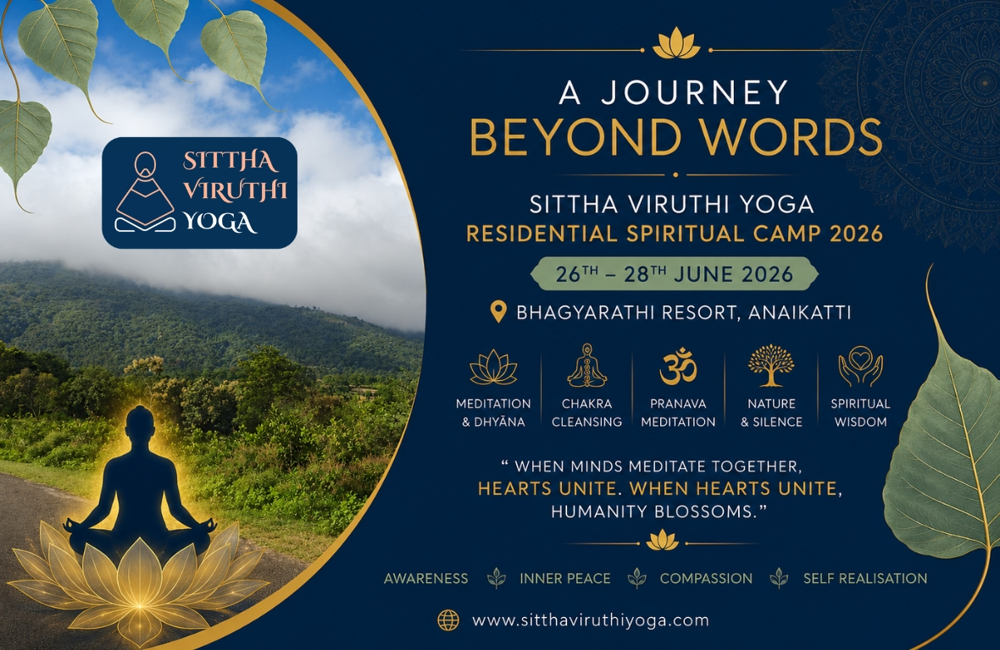

3-Day Sittha Viruthi Yoga Residential Spiritual Camp – June 2026
Some experiences are not merely remembered—they become a part of who we are.

The three-day Sittha Viruthi Yoga Residential Spiritual Camp, held from 26th to 28th June 2026 amidst the serene beauty of Bhagyarathi Resort, Anaikatti, was one such unforgettable journey.
Nestled in the lap of nature, surrounded by majestic hills, fresh mountain air, singing birds and profound silence, the environment itself became a teacher. Every breeze carried peace, every sunrise awakened hope, and every meditation drew participants closer to their true Self.
Conducted once every three months as a regular feature of Sittha Viruthi Yoga, these residential camps have evolved into a sacred space where seekers come together—not merely to learn Yoga, but to experience life at a deeper level.
The camp unfolded under the soulful guidance of our Spiritual Mentor, who beautifully explained not only the practices but also their symbolic and spiritual significance. Every meditation became meaningful because participants understood not just how to practise, but why they were practising.
Each day began with Aura Cleansing, followed by Pranava (Om Kara) Meditation, allowing participants to synchronise their breath, mind and consciousness while drawing Universal Energy through the sacred vibration of OM.
Participants were gently guided through powerful spiritual practices including Chakra Cleansing, Pañca Bhūta Dhyāna (Meditation on the Five Elements), Nava Graha Dhyāna (Meditation on the Cosmic Planetary Energies), Pañcendriya Dhyāna (Meditation on the Five Senses), Nava Chakra Bīja Dhyāna (Nine-Centred Meditation using Beej Mantras), and special meditations for prosperity, inner harmony and universal well-being.
One of the most profound experiences was the Dehātīta Dhyāna—Meditation Beyond Body Identification—which gently guided participants to transcend physical awareness and experience themselves as pure consciousness. Equally uplifting was the Prāṇa Vistāra Dhyāna, where the energy body was expanded from the Mooladhara to the infinite space of Shiva Kalam and lovingly brought back, creating a deep experience of inner expansion.
The sacred Dhana Aakarshana Ganapathi Pooja, inspired by the teachings of Vethathiri Maharishi, was performed with devotion, prayers and gratitude for the prosperity and well-being of every family.
The sessions on Aura Cleansing through Sound, using Beej Mantras and sacred Mudras, created a deeply soothing atmosphere, enabling participants to release negativity and consciously build a vibrant field of positive energy.
Every evening concluded with reflective discussions, questions and answers, and enlightening conversations on health, relationships, awareness, symbolism, spirituality, the significance of the Nava Grahas, temple traditions and practical wisdom for leading a peaceful and meaningful life.
More than the practices themselves, it was the spirit of togetherness that made the camp extraordinary.
People from different walks of life, different professions and different places came together as one family. There was no distinction of age or background—only hearts united in the common pursuit of inner peace and spiritual growth.
- Meals were shared with gratitude.
- Meditation was experienced in silence.
- Knowledge was exchanged with humility.
- Laughter became prayer.
- Service became love.
- Silence became the language of the soul.
These residential camps beautifully nurture mindfulness, compassion, harmony, mutual respect and collective spiritual evolution. They remind us that spirituality is not an escape from life—it is learning to live life with greater awareness, balance and love.
As the camp concluded, heartfelt feedback poured in from participants. Many described it as life-changing, deeply healing and spiritually awakening. For several, words simply fell short. Some experiences can only be felt.
Every participant returned home carrying something invaluable—not merely memories, but renewed hope, inner clarity, stronger relationships, deeper awareness and a peaceful heart.
The camp may have concluded, but the journey within has only begun. Sittha Viruthi Yoga continues to inspire individuals to discover the limitless potential that already exists within them, transforming ordinary lives into extraordinary journeys of awareness, love, peace and self-realisation.
When minds meditate together, hearts unite. When hearts unite, humanity blossoms.